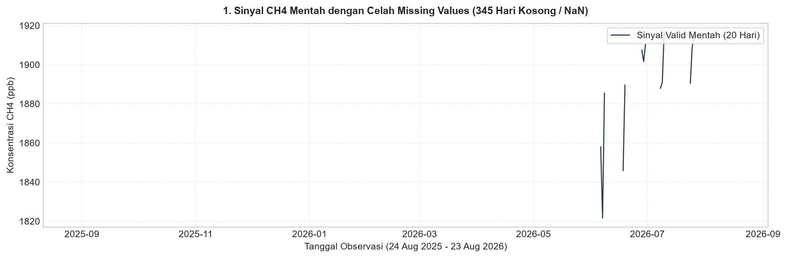
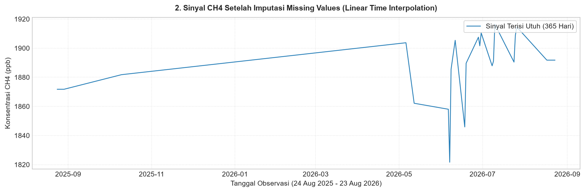
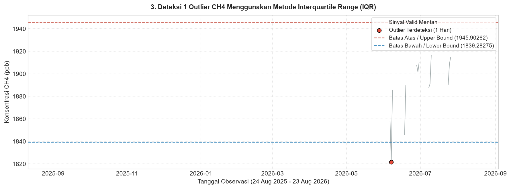
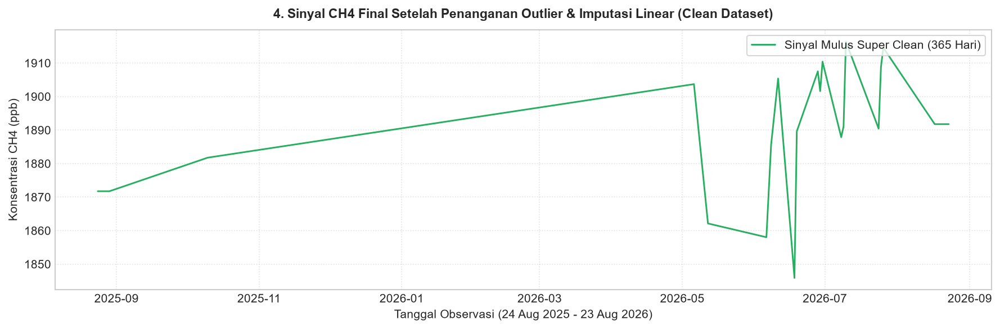

Data Preparation (Polutan Metana - Kecamatan Bungah)#
Notebook ini mengeksekusi tahapan Data Preparation metodologi CRISP-DM untuk polutan Metana (\({\text{CH4}}\)) pada skala geografis Kecamatan Bungah, Kabupaten Gresik selama 365 hari (24 Agustus 2025 – 23 Agustus 2026):
Alur Pemrosesan Data:
Penanganan Missing Values & Outliers (Evaluasi Celah Data \(\rightarrow\) Deteksi Outlier IQR \(\rightarrow\) Pengosongan Outlier \(\rightarrow\) Linear Time Interpolation)
Visualisasi 4 Grafik Terpisah (Missing Raw, Imputed Missing, Outlier Detection, Final Clean Signal)
Penyimpanan Dataset Clean (
data/csv/clean/CH4_clean.csv)Ekstraksi Fitur Resmi Time-Series TSFEL (
data/csv/features/CH4_tsfel_features.csvberbasis 4 domain utama TSFEL: Statistical, Temporal, Spectral, & Fractal)
import pandas as pd
import numpy as np
import matplotlib.pyplot as plt
import tsfel
import os
# Set style visualisasi plot
plt.style.use('seaborn-v0_8-whitegrid' if 'seaborn-v0_8-whitegrid' in plt.style.available else 'default')
1. Penanganan Missing Values & Deteksi Outlier (IQR Method)#
Memuat data mentah 365 hari, menghitung statistik data valid/missing, menentukan ambang batas IQR (\(Q_1, Q_3, \text{IQR}\), Lower & Upper Bound), serta mengosongkan titik outlier menjadi NaN untuk diimputasi bersama.
# 1. Membaca Dataset Mentah CH4 (365 Hari)
raw_path = '../data/csv/timeseries/CH4_gresik_timeseries.csv'
df_raw = pd.read_csv(raw_path)
df_raw['date'] = pd.to_datetime(df_raw['date'])
df_raw = df_raw.sort_values('date').reset_index(drop=True)
total_rows = len(df_raw)
nan_awal = df_raw['CH4'].isna().sum()
valid_awal = df_raw['CH4'].notna().sum()
print(f"Total Baris Observasi : {total_rows} hari")
print(f"Jumlah Data Valid Awal : {valid_awal} hari ({valid_awal/total_rows*100:.2f}%)")
print(f"Jumlah Missing (NaN) : {nan_awal} hari ({nan_awal/total_rows*100:.2f}%)")
# 2. Deteksi Outlier Menggunakan Metode Interquartile Range (IQR) pada Data Valid
q1 = df_raw['CH4'].quantile(0.25)
q3 = df_raw['CH4'].quantile(0.75)
iqr = q3 - q1
lower_bound = q1 - 1.5 * iqr
upper_bound = q3 + 1.5 * iqr
is_outlier = (df_raw['CH4'] < lower_bound) | (df_raw['CH4'] > upper_bound)
jumlah_outlier = is_outlier.sum()
print(f"\nKuartil 1 (Q1) : {q1:.6f} ppb")
print(f"Kuartil 3 (Q3) : {q3:.6f} ppb")
print(f"IQR (Q3 - Q1) : {iqr:.6f} ppb")
print(f"Batas Bawah (Lower Bound): {lower_bound:.6f} ppb")
print(f"Batas Atas (Upper Bound) : {upper_bound:.6f} ppb")
print(f"Jumlah Outlier Terdeteksi: {jumlah_outlier} hari")
# Menampilkan rincian tanggal & nilai outlier yang terdeteksi
df_outliers = df_raw[is_outlier][['date', 'CH4']].copy()
df_outliers['date'] = df_outliers['date'].dt.strftime('%Y-%m-%d')
print("\nDaftar Tanggal & Nilai Outlier Terdeteksi:")
print(df_outliers.to_string(index=False))
# 3. Pengosongan Nilai Outlier Menjadi NaN & Imputasi Linear Time Interpolation
df_prep = df_raw.copy()
df_prep.loc[is_outlier, 'CH4'] = np.nan
nan_setelah_outlier = df_prep['CH4'].isna().sum()
print(f"\nJumlah NaN Setelah Outlier Dikosongkan: {nan_setelah_outlier} hari ({nan_setelah_outlier/total_rows*100:.2f}%)")
df_clean = df_prep.copy()
df_clean['CH4_clean'] = df_clean['CH4'].interpolate(method='linear', limit_direction='both')
nan_akhir = df_clean['CH4_clean'].isna().sum()
print(f"Jumlah NaN Setelah Imputasi Akhir : {nan_akhir} hari (100% Clean!)")
# Simpan dataset bersih ke file CSV
clean_csv_path = '../data/csv/clean/CH4_clean.csv'
os.makedirs(os.path.dirname(clean_csv_path), exist_ok=True)
df_clean[['date', 'CH4_clean']].rename(columns={'CH4_clean': 'CH4'}).to_csv(clean_csv_path, index=False)
print(f"SUCCESS: Dataset bersih disimpan ke '{clean_csv_path}'")
Total Baris Observasi : 365 hari
Jumlah Data Valid Awal : 20 hari (5.48%)
Jumlah Missing (NaN) : 345 hari (94.52%)
Kuartil 1 (Q1) : 1879.265198 ppb
Kuartil 3 (Q3) : 1905.920166 ppb
IQR (Q3 - Q1) : 26.654968 ppb
Batas Bawah (Lower Bound): 1839.282745 ppb
Batas Atas (Upper Bound) : 1945.902618 ppb
Jumlah Outlier Terdeteksi: 1 hari
Daftar Tanggal & Nilai Outlier Terdeteksi:
date CH4
2026-06-07 1821.64209
Jumlah NaN Setelah Outlier Dikosongkan: 346 hari (94.79%)
Jumlah NaN Setelah Imputasi Akhir : 0 hari (100% Clean!)
SUCCESS: Dataset bersih disimpan ke '../data/csv/clean/CH4_clean.csv'
2. Visualisasi 4 Grafik Terpisah#
Menyajikannya secara terpisah agar tidak menumpuk banyak warna dalam satu grafik.
# Grafik 1: Missing Values (Data Mentah dengan Celah Kosong / NaN)
fig, ax = plt.subplots(figsize=(12, 4), dpi=150)
ax.plot(df_raw['date'], df_raw['CH4'], color='#2c3e50', linewidth=1.2, label=f'Sinyal Valid Mentah ({valid_awal} Hari)')
ax.set_title(f'1. Sinyal CH4 Mentah dengan Celah Missing Values ({nan_awal} Hari Kosong / NaN)', fontsize=11, fontweight='bold', pad=10)
ax.set_xlabel('Tanggal Observasi (24 Aug 2025 - 23 Aug 2026)', fontsize=10)
ax.set_ylabel('Konsentrasi CH4 (ppb)', fontsize=10)
ax.legend(loc='upper right', frameon=True)
ax.grid(True, linestyle=':', alpha=0.6)
plt.tight_layout()
plt.show()

# Grafik 2: Sinyal Setelah Missing Values Diimputasi (Sebelum Cleaning Outlier)
df_raw_imputed = df_raw.copy()
df_raw_imputed['CH4_imputed'] = df_raw_imputed['CH4'].interpolate(method='linear', limit_direction='both')
fig, ax = plt.subplots(figsize=(12, 4), dpi=150)
ax.plot(df_raw_imputed['date'], df_raw_imputed['CH4_imputed'], color='#2980b9', linewidth=1.2, label='Sinyal Terisi Utuh (365 Hari)')
ax.set_title('2. Sinyal CH4 Setelah Imputasi Missing Values (Linear Time Interpolation)', fontsize=11, fontweight='bold', pad=10)
ax.set_xlabel('Tanggal Observasi (24 Aug 2025 - 23 Aug 2026)', fontsize=10)
ax.set_ylabel('Konsentrasi CH4 (ppb)', fontsize=10)
ax.legend(loc='upper right', frameon=True)
ax.grid(True, linestyle=':', alpha=0.6)
plt.tight_layout()
plt.show()

# Grafik 3: Deteksi Outlier Menggunakan Metode IQR
outliers_plot = df_raw[is_outlier]
fig, ax = plt.subplots(figsize=(12, 4.5), dpi=150)
ax.plot(df_raw['date'], df_raw['CH4'], color='#7f8c8d', linewidth=1.0, alpha=0.7, label='Sinyal Valid Mentah')
ax.scatter(outliers_plot['date'], outliers_plot['CH4'], color='#e74c3c', s=45, zorder=5, marker='o', edgecolor='black', linewidth=0.8, label=f'Outlier Terdeteksi ({jumlah_outlier} Hari)')
ax.axhline(upper_bound, color='#c0392b', linestyle='--', linewidth=1.2, label=f'Batas Atas / Upper Bound ({upper_bound:.5f})')
ax.axhline(lower_bound, color='#2980b9', linestyle='--', linewidth=1.2, label=f'Batas Bawah / Lower Bound ({lower_bound:.5f})')
ax.set_title(f'3. Deteksi {jumlah_outlier} Outlier CH4 Menggunakan Metode Interquartile Range (IQR)', fontsize=11, fontweight='bold', pad=10)
ax.set_xlabel('Tanggal Observasi (24 Aug 2025 - 23 Aug 2026)', fontsize=10)
ax.set_ylabel('Konsentrasi CH4 (ppb)', fontsize=10)
ax.legend(loc='upper right', frameon=True, fontsize=9)
ax.grid(True, linestyle=':', alpha=0.6)
plt.tight_layout()
plt.show()

# Grafik 4: Sinyal CH4 Final Setelah Outlier Dibersihkan & Diimputasi
fig, ax = plt.subplots(figsize=(12, 4), dpi=150)
ax.plot(df_clean['date'], df_clean['CH4_clean'], color='#27ae60', linewidth=1.4, label='Sinyal Mulus Super Clean (365 Hari)')
ax.set_title('4. Sinyal CH4 Final Setelah Penanganan Outlier & Imputasi Linear (Clean Dataset)', fontsize=11, fontweight='bold', pad=10)
ax.set_xlabel('Tanggal Observasi (24 Aug 2025 - 23 Aug 2026)', fontsize=10)
ax.set_ylabel('Konsentrasi CH4 (ppb)', fontsize=10)
ax.legend(loc='upper right', frameon=True)
ax.grid(True, linestyle=':', alpha=0.6)
plt.tight_layout()
plt.show()

3. Ekstraksi 68 Fitur Time-Series TSFEL (f1_namafitur hingga f68_namafitur)#
Mengekstrak 68 fitur TSFEL dan menyimpannya ke data/csv/features/CH4_tsfel_features.csv dalam format matriks 68-kolom horizontal.
# 1. Daftar Resmi 68 Fitur TSFEL
FEATURE_LIST = """abs_energy auc autocorr average_power calc_centroid calc_max calc_mean
calc_median calc_min calc_std calc_var dfa distance ecdf ecdf_percentile ecdf_percentile_count
ecdf_slope entropy fundamental_frequency higuchi_fractal_dimension hist_mode human_range_energy
hurst_exponent interq_range kurtosis lempel_ziv lpcc max_frequency max_power_spectrum
maximum_fractal_length mean_abs_deviation mean_abs_diff mean_diff median_abs_deviation
median_abs_diff median_diff median_frequency mfcc mse negative_turning neighbourhood_peaks
petrosian_fractal_dimension pk_pk_distance positive_turning power_bandwidth rms skewness slope
spectral_centroid spectral_decrease spectral_distance spectral_entropy spectral_kurtosis
spectral_positive_turning spectral_roll_off spectral_roll_on spectral_skewness spectral_slope
spectral_spread spectral_variation spectrogram_mean_coeff sum_abs_diff wavelet_abs_mean
wavelet_energy wavelet_entropy wavelet_std wavelet_var zero_cross""".split()
# 2. Memuat Konfigurasi TSFEL & Aktifkan Fitur dari FEATURE_LIST
cfg = tsfel.get_features_by_domain()
func_to_feat = {}
for domain in cfg:
for feat_name, feat_dict in cfg[domain].items():
func_name = feat_dict.get('function', '').replace('tsfel.', '')
if func_name in FEATURE_LIST:
feat_dict['use'] = 'yes'
if 'wavelet' in func_name:
feat_dict['parameters']['max_width'] = 2
func_to_feat[func_name] = feat_name
else:
feat_dict['use'] = 'no'
# 3. Ekstraksi Fitur TSFEL Langsung dari Sinyal Clean
raw_df = tsfel.time_series_features_extractor(cfg, df_clean['CH4_clean'], fs=1, verbose=0)
# 4. Pemetaan Presisi Matriks 68 Fitur (f1_abs_energy ... f68_zero_cross)
row_dict = {}
for i, func_name in enumerate(FEATURE_LIST):
code = f"f{i+1}"
matching_cols = [c for c in raw_df.columns if func_name in c.lower().replace('tsfel.', '') or func_to_feat.get(func_name, '').lower() in c.lower()]
if not matching_cols:
feat_title = func_to_feat.get(func_name, '')
matching_cols = [c for c in raw_df.columns if feat_title.lower() in c.lower()]
val = raw_df[matching_cols[0]].values[0] if matching_cols else 0.0
row_dict[f"{code}_{func_name}"] = val
df_68_matrix = pd.DataFrame([row_dict])
features_path = '../data/csv/features/CH4_tsfel_features.csv'
os.makedirs(os.path.dirname(features_path), exist_ok=True)
df_68_matrix.to_csv(features_path, index=False)
print(f"SUCCESS: Matriks Presisi 68 Fitur TSFEL berhasil disimpan ke '{features_path}'! (Shape: {df_68_matrix.shape})")
df_68_matrix
SUCCESS: Matriks Presisi 68 Fitur TSFEL berhasil disimpan ke '../data/csv/features/CH4_tsfel_features.csv'! (Shape: (1, 68))
C:\Users\ASUS\AppData\Local\Programs\Python\Python312\Lib\site-packages\tsfel\feature_extraction\features_utils.py:534: RuntimeWarning: invalid value encountered in divide
rs = np.divide(r, s)
| f1_abs_energy | f2_auc | f3_autocorr | f4_average_power | f5_calc_centroid | f6_calc_max | f7_calc_mean | f8_calc_median | f9_calc_min | f10_calc_std | ... | f59_spectral_spread | f60_spectral_variation | f61_spectrogram_mean_coeff | f62_sum_abs_diff | f63_wavelet_abs_mean | f64_wavelet_energy | f65_wavelet_entropy | f66_wavelet_std | f67_wavelet_var | f68_zero_cross | |
|---|---|---|---|---|---|---|---|---|---|---|---|---|---|---|---|---|---|---|---|---|---|
| 0 | 1.302724e+09 | 687663.309387 | 21.0 | 3.578912e+06 | 182.53874 | 1916.421265 | 1889.164578 | 1891.473342 | 1845.876221 | 12.8207 | ... | 0.027387 | 0.716212 | 5169.427845 | 384.951965 | 8.152634 | 80.392049 | -0.0 | 79.977598 | 6396.416175 | 0.0 |
1 rows × 68 columns